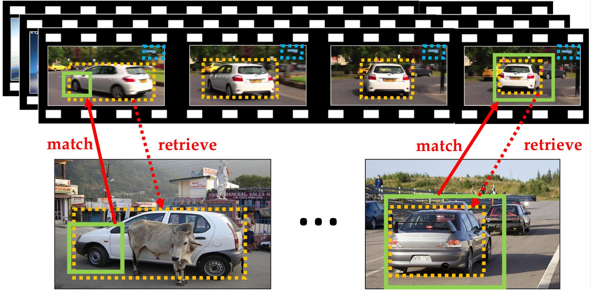
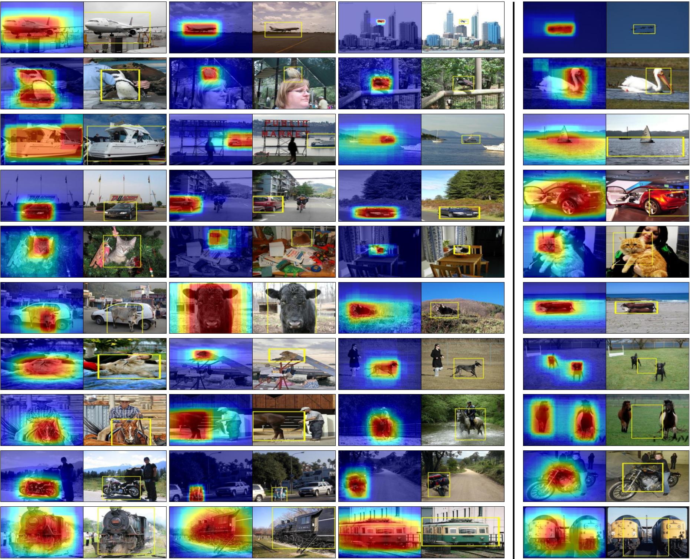

Track and Transfer: Watching Videos to Simulate Strong Human Supervision for Weakly-Supervised Object Detection

Main idea: (top) Automatically tracked objects (yellow and blue boxes) in weakly-labeled videos without any human initialization. (bottom) Discriminative visual regions (green boxes) mined in weakly-labeled training images. For each discriminative region, we find its best matching region across all videos, and retrieve its overlapping tracked object box (yellow dotted box) back to the image. The retrieved boxes are used as pseudo ground-truth to train an object detector. Our approach improves object localization by expanding the initial visual region beyond a small object part (bottom-left) or removing the surrounding context (bottomright). In practice, we combine the retrieved boxes from multiple visual regions in an image to produce its best box.
In CVPR 2016
People
Abstract
The status quo approach to training object detectors requires expensive bounding box annotations. Our framework takes a markedly different direction: we transfer tracked object boxes from weakly-labeled videos to weakly-labeled images to automatically generate pseudo ground-truth boxes, which replace manually annotated bounding boxes. We first mine discriminative regions in the weakly-labeled image collection that frequently/rarely appear in the positive/negative images. We then match those regions to videos and retrieve the corresponding tracked object boxes. Finally, we design a hough transform algorithm to vote for the best box to serve as the pseudo GT for each image, and use them to train an object detector. Together, these lead to state-of-the-art weakly-supervised detection results on the PASCAL 2007 and 2010 datasets.
Paper
|
|
Additional Materials
Interesting Results

Qualitative results on the VOC 2007 train+val set. In each image pair, the first image shows a heatmap of the transferred video object boxes and the second image shows the final selected pseudo ground-truth box. Our approach accurately discovers the spatial extent of the object-of-interest in most of the images. The last column shows mis-localized examples. Our approach can fail when there are multiple instances of the same object category in the image (e.g., aeroplane, dog, horse, train) or when the object’s appearance is very different from that found in videos (e.g., car).
Acknowledgments
This work was supported in part by an Amazon Web Services Education Research Grant and GPUs donated by NVIDIA.
Comments, questions to Krishna Kumar Singh